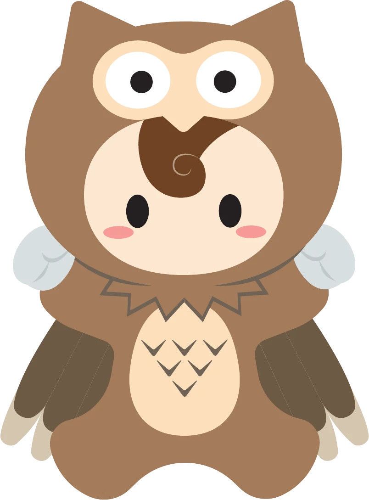
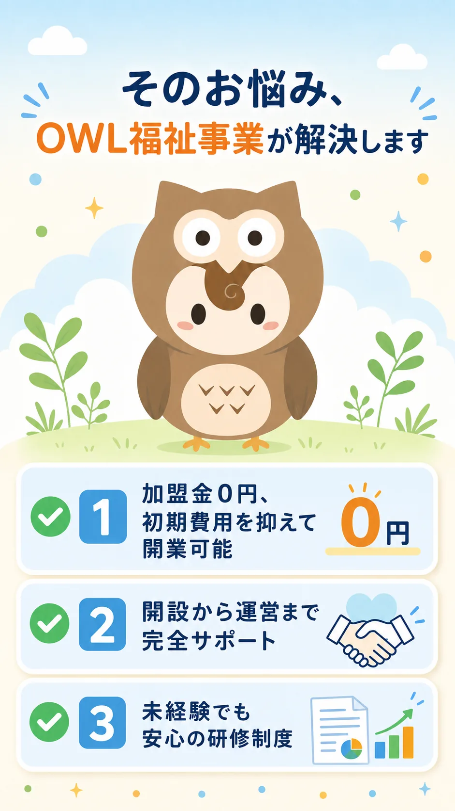

OWL「そのお悩み、OWL福祉事業が解決します」— 焼き込み画像 → HTML化
50%
見てほしいところ：ブラウザの幅を変えると、860pxを境にスマホ版（縦積み）とPC版（左アウル君＋右3カード）が切り替わります。
「重ねる」を選ぶと元画像を半透明で重ねられます（ズレの確認用）。
中身：見出し・カード3枚の文字・「0円」はすべてHTMLのテキスト（＝Googleが読める）。
背景は星崎さん支給のもの（2026-08-29）。空はCSSのグラデーション＋下の風景だけ画像にしているので、
セクションの高さが変わっても地平線が歪みません。文言・数値は1文字も変えていません。
★アウル君について：公式の .ai データ（OWL_キャラクター_0906.ai）を全ポーズ照合しましたが、
元LPのアウル君と同じ絵柄は公式データに存在しませんでした（元LPは水彩調・オレンジの足あり／公式は
フラットなベクター・襟あり・足なし。最も近いポーズでもシルエット一致82%）。
今は公式データのポーズを使っています（02_worryと同じもの）。
下のボタンで元LPから切り出したアウル君に切り替えて見比べられます。
HTML版
そのお悩み、OWL福祉事業が解決します

-
1
加盟金0円、初期費用を抑えて開業可能
0円
-
2
開設から運営まで完全サポート
-
3
未経験でも安心の研修制度


アウル君の絵柄